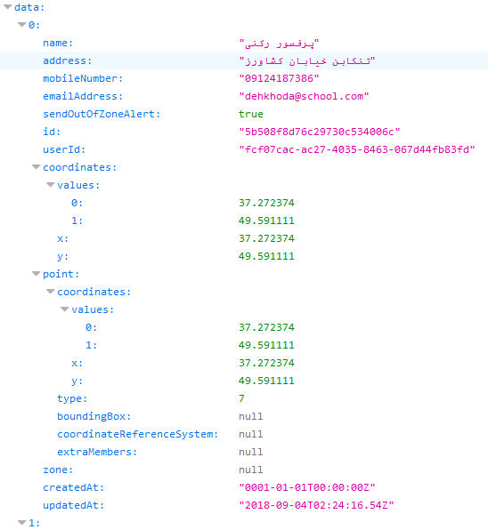

Json
Its a carrier between client and server look at the pictures below :


both are showing same datasource , you can fetch all of them them this way :
var dataSource = new kendo.data.DataSource({
transport: {
read: {
url:"ur url",
type: "GET",
//neccessary for Json
dataType: "json",
contentType: "application/json",
//Token
beforeSend: (xhr) => {
xhr.setRequestHeader("Authorization", "Bearer " + localStorage.getItem("access_token"));
},
},
},
// define the server method
schema: {
model: {
fields: {
name: {
type: "string"
},
mobileNumber: {
type: "string"
},
emailAddress: {
type: "string"
},
address: {
type: "string"
},
coordinates: {
type: "object"
},
sendOutOfZoneAlert: {
type: "boolean"
}
},
},
},
batch: true,
});
//fetching
dataSource.fetch(function() {
var dataItems = this.view();
//loop to get entire data
for(var i=0;i<=dataItems.length;i++){
//set to view model with the data from Json
viewModel.set("name", dataItems[i].name);
viewModel.set("tel", dataItems[i].mobileNumber);
viewModel.set("email", dataItems[i].emailAddress);
viewModel.set("address", dataItems[i].address);
viewModel.set("x", dataItems[i].coordinates.x);
viewModel.set("y", dataItems[i].coordinates.y);
viewModel.set("sms", dataItems[i].sendOutOfZoneAlert);
boolean_chk = dataItems[i].sendOutOfZoneAlert;
}
});
in methods :
In methods you need to mention it as type :
//jason type neccesary lines
contentType: 'application/json',
dataType: 'json',
By Arash Bandarchian